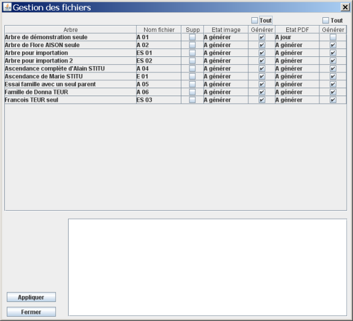
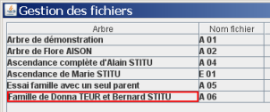
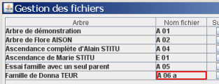
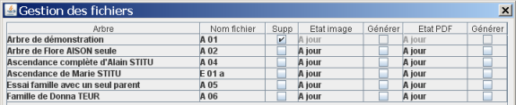
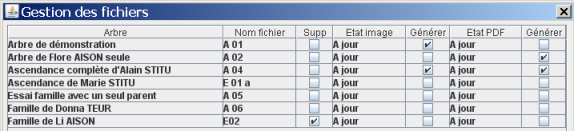
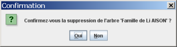
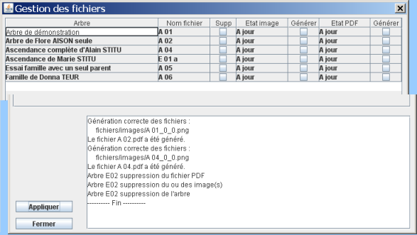
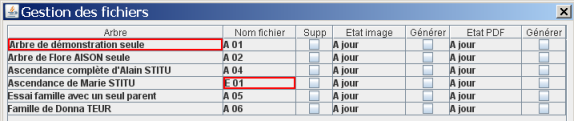
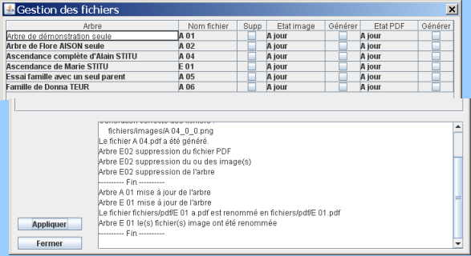

Modification du nom de l'arbre - Modification du nom de fichier - Suppression de l'arbre - Génération d'images - Génération de fichier PDF - Appliquer -
La gestion de fichiers permet de gérer les fichiers générés par GénéGraphe. Ce choix n'est actif que quand vous n'avez rien dans l'arbre courant. Pour ce faire, le plus simple est de choisir l'option Nouveau du menu Fichier.
Quand vous choisissez l'option Gestion des fichiers du menu Fichier, une fenêtre s'ouvre :

Le tableau contient plusieurs colonnes :
Les deux cases à cocher marquées Tout permettent de sélectionner ou désélectionner la totalité de la colonne correspondante.
Vous pouvez modifier le nom de l'arbre. Il appara&ît alors encadré en rouge pour indiquer que vous avez fait une modification.

Vous pouvez modifier le nom de fichier. Il appara&ît alors encadré en rouge pour indiquer que vous avez fait une modification.

Toute modification de nom de fichier aura pour conséquence que les fichiers images et le fichier PDF seront eux aussi renommés.
Pour supprimer un arbre, validez la case à cocher dans la colonne Supp. Cela supprimera l'arbre ainsi que les fichiers images et le fichier PDF.

Remarquez que les colonnes Générer pour les images et les fichiers PDF ne sont plus accessibles. Si l'une d'elles était cochée, elle ne l'est plus quand vous demandez la suppression de l'arbre. C'est normal, il est inutile de demander à générer des images ou des fichiers PDF si vous voulez les supprimer.
Quand vous cliquez sur Appliquer, GénéGraphe vous demande de confirmer la suppression de l'arbre.
Vous disposez de deux colonnes pour vous aider dans la génération des images.
Celle qui est intitulée "Etat image " est renseignée par GénéGrapheà partir de tous les renseignements dont il dispose. Elle peut contenir " A jour " ou " A générer " .Elle contient " A générer " si , après avoir généré les fichiers,
Si une ou plusieurs de ces conditions sont présentes, la colonne " Générer " est cochée.
Vous pouvez toujours choisir de générer ou non les fichiers en cochant ou non la colonne " A générer ".
Tout ce qui expliqué pour les images est valable pour le fichier PDF.
Quand vous cliquez sur le bouton " Appliquer ", les modifications demandées sont faites. Par exemple, vous avez demandé les modifications suivantes :

GénéGraphe vous demande de confirmer la suppression de l'arbre.

Les modifications demandées sont faites et vous obtenez la fenêtre suivante :

Le rectangle en bas de la fenêtre présente le suivi des modifications appliquées.
Vous pouvez faire une autre demande :

Après avoir appliqué les modifications, vous obtenez la fenêtre :
